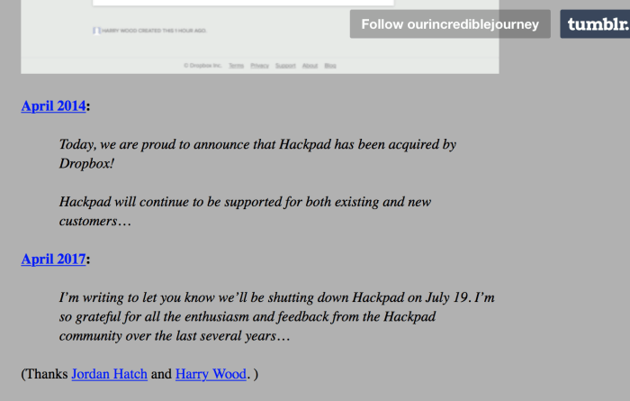

Issue
I quit Facebook seven months ago. Despite its undeniable value, I think Facebook is at odds with the open web that I love and defend. This essay is my attempt to explain not only why I quit Facebook but why I believe we're slowly replacing a web that empowers with one that restricts and commoditizes people. And why we should, at the very least, stop and think about the consequences of that shift.
The modern web is different than what it was 10 years ago. It's naturally different from a technological standpoint: we have faster connections, better browser standards, tighter security and new media formats. But it is also different in the values it espouses. Today, we are so far from that initial vision of linking documents to share knowledge that it's hard to simply browse the web for information without constantly being asked to buy something, like something, follow someone, share the page on Facebook or sign up to some newsletter. All the while being tracked and profiled.
Almost every website you go to today reports your activities to third parties that you most likely neither know nor trust. They record where you come from, what pages you visit, how long you stay on each, where you click and where you go next. In fact, since so many websites report to the same third parties, these companies can essentially have your web history on file as you go from link-to-link, website to website. Like an omnipotent eye embedded on Sir Berners-Lee's global system of interlinked documents, noting down everything you do and reporting to private entities who then sell this information for profit.
These companies build profiles, anonymous at first, with your interests and navigational behavior. These profiles can then get increasingly personal: they might include your email addresses, home address, income, educational history, political affiliation, information on your family. Over time, they can cross-reference all this information with your location data to figure out where you work, which restaurants you go to, where your gym is. Recently, we even learned that Google was able to associate your offline purchases with your online ad viewing history (albeit anonymously, it would appear). Once they have that, they can look into your behavior and psychology: what kind of ads do you tend to click on? What kind of messages resonate most with you? What are the best strategies to influence your opinion?
The Leave campaign responsible for Brexit in the United Kingdom and Donald Trump's 2016 presidential campaign both bought the services of a certain Cambridge Analytica, a company that boasts a gigantic database containing personal details amounting to "close to four or five thousand data points on every adult in the United States" (their own words). The goal? Craft hyper-personalized messages to change voting behavior based on your individual personalities, and by extension, your attitudes, opinions and fears.s So if you are identified as a dad of three young kids in rural Texas, the message is nuanced to suggest that only a certain candidate will be able to protect your family against real or imagined threats. If you are identified as a patriot who's previously posted comments about gun rights and the second amendment, it might be about crime rates and how the opposition is trying to take your constitutional rights away from you.
You become a manipulable data point at the mercy of big corporations who sell their ability to manipulate you based on the data you volunteer.
This is the equivalent of someone following you in real life as you go about your everyday business, like a private eye who notes down with whom you meet, what you talk about, what you spend time looking at in stores. A private eye who takes notes and then sells it to the highest bidder. But you got to enter the store for free, so you should be so glad. The stores might also justify it. "Sure it's a bit invasive, but we'll be able to give you better recommendations if we know what you like".
But how do they get all this personal information -- where you live, who your friends are, what your religion and ethnicity are, where you were last night, what you bought on Monday? Most of it you volunteer yourself on social platforms like Facebook, Twitter and Instagram. The little share buttons you see on websites aren't just there to make it easy for you to post a link to Facebook; they also allow Facebook to be present and gather information about you from pretty much any website.
Gated Communities
One of the most impressive things about the Internet (and consequently also the web) is that it is decentralized. No central authority gets to decide which page is more important than others and you don't have to play by anyone else's terms to publish and read what you want. There isn't anything like a main server that stores the code that runs the Internet; it's just a protocol on a physical backbone (of undersea cables).
You could buy a Raspberry Pi Zero today for less than 10€, connect it to the Internet, set up a chat server on it, give it a public address and the world would be able to connect to it and talk to one other. Sure, it might not perform too well and no one might actually use it, but it is technically possible.
But most of the time we spend on the web today is no longer on the open Internet - it's on private services like Facebook, Twitter and LinkedIn. While Facebook provides a valuable service, it is also a for-profit, company. Their source of revenue is advertising. It is the epitome of centralized.
Try posting a picture of the Francisco de Goya's "The Naked Maja" or your naked breasts (if you're a woman) on Facebook; it'll almost certainly be removed. It's against their terms of use. To use their platform, you have to agree to whatever conditions they set, however absurd. If you replace the open web with Facebook, you're giving up your right to publish and share on your terms. The data that you post there does not belong to you; you're putting it in a closed system. If one day Facebook decides to shut down—unlikely as that might seem today—your data goes with it. Sure, you might be able to download parts of it, but then what?

This works because they know you'll agree to it. You'll say you don't have a choice, because your friends are all there—the infamous "network effect". This is Facebook's currency, its source of strength but also a crucial dependency.
And this is what we often fail to realize: without its users—without you— Facebook would be nothing. But without Facebook, you would only be inconvenienced. Facebook needs you more than you need it.
And they do their best to keep you on their website as long as possible. Your attention is worth a lot to a lot of companies who are convinced that traditional advertising is dead and that micro-targeted campaigns work better. (And they mostly do, from their point of view). This drives them to come up with absurd techniques to create addiction: wish your friend happy birthday, wish your colleague a happy work anniversary (who does that?), here's a video we made about you, three friends are going to an event near you, continue watching the video you started even as you scroll, be the first to comment, react to this photo, tell everyone what you're up to.
The longer you stay, the more information you give, the more valuable your profile—and the platform—is to advertisers.
I'm not saying that what Facebook is doing is entirely unethical. It has to make money to make up for the resources it employs to keep the website running and it does so by advertising. Every time you choose to use a free service like Instagram, LinkedIn, Gmail or Snapchat, you are paying for the convenience with your eyes, your data and your attention. There's nothing inherently wrong as long you as you understand and consent to this exchange of value. But do you? Does your daughter? Your dad?
What I'm against is the centralization of services; Facebook and Google are virtually everywhere today. Through share buttons, free services, mobile applications, login gateways and analytics, they are able to be present on virtually every website you visit. This gives them immense power and control. They get to unilaterally make decisions that affect our collective behavior, our expectations and our well-being. You're either with them or out. Well, I chose out.
You see, the web wasn't meant to be a gated community. It's actually pretty simple.
A web server, a public address and an HTML file are all that you need to share your thoughts (or indeed, art, sound or software) with anyone in the world. No authority from which to seek approval, no editorial board, no publisher. No content policy, no dependence on a third party startup that might fold in three years to begin a new adventure.
That's what the web makes possible. It's friendship over hyperlink, knowledge over the network, romance over HTTP.
In fact, the browser you're reading this on (Chrome, Firefox, lynx, whatever), the web server that's hosting this website (Nginx), the operating system that this server runs on (Ubuntu), the programming tools used to make it all work (python, gcc, node.js...) -- all of these things were created collectively by contributors all around the world, brought together by HTTP. And given away for free in the spirit of sharing.
The web is open by design and built to empower people. This is the web we're breaking and replacing with one that subverts, manipulates and creates new needs and addiction.